Afterlives was a game created in C# using unity by me for my A-Level Computer Science project. This was my first project using C#, and my first time using unity. The project ended up recieving an A* grade. The game is a 2D platformer, and includes many features such as fluid player movement, simple enemy AI, interactable NPCs, upgradable weapons, and customisable settings.
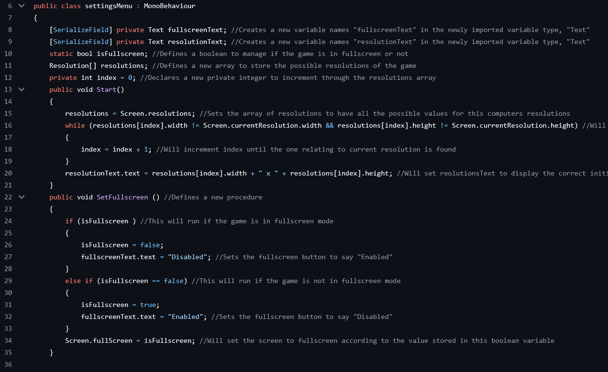
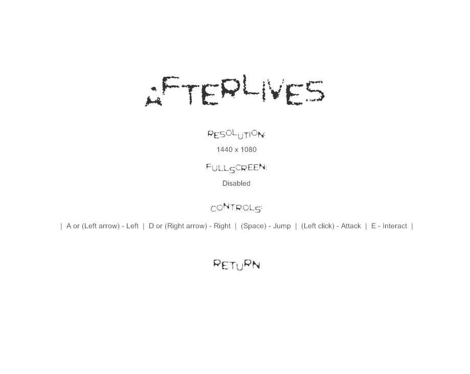
These images shows the settings menu and the code for it I created for this project. I was able to use the variables I change here in Unity to alter the game window. The settings menu shows all the controls, along with allowing the user to change the game to fullscreen, or alter the resolution of the window allowing for more customisation to the users preferences.
The code here is a sample of the 'Enemy' class I created. It is well commented, and all code exists in the afterlives repo on my GitHub. This code initialises some of the variables I created in unity, and communicates closely with unity. It takes the players current location as an attribute, and will constantly be updating this. When the player attacks and is in front of the enemy, then the TakeDamage() method will be called to apply knockback and decrease the health of the enemy. The Die() method is also defined here, which will remove the instance of enemy when its health attribute reaches 0.
This code communicates closely with Unity, and taught me how to use it well.
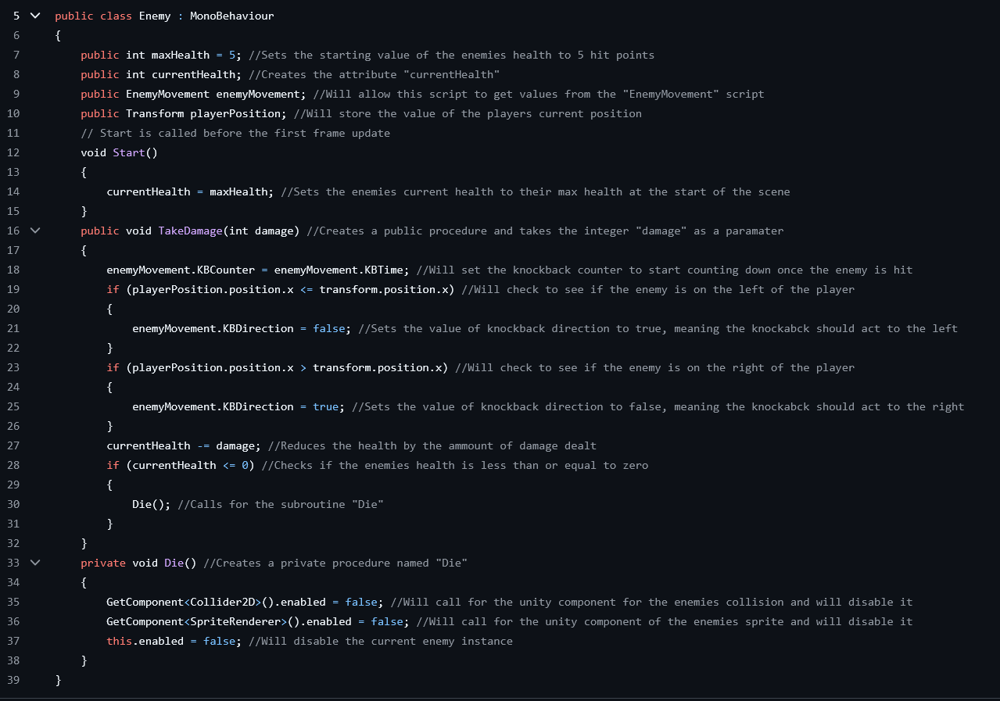
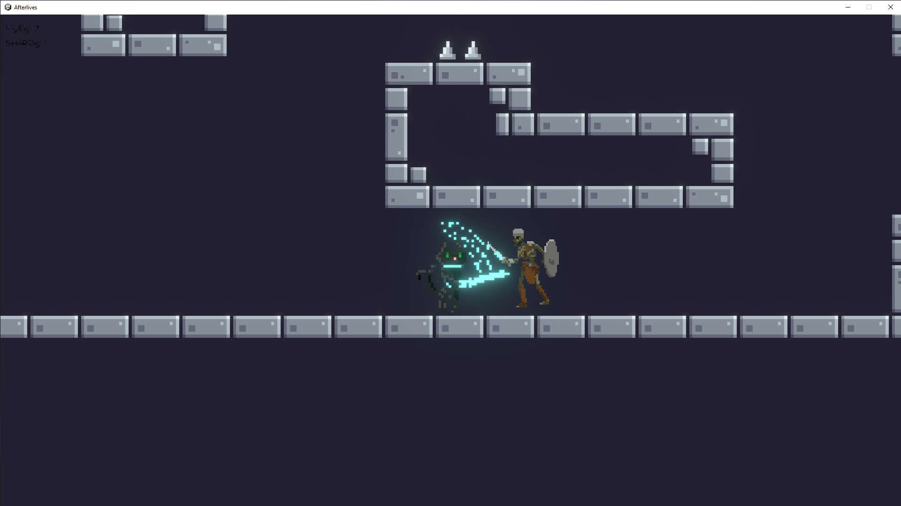
This image displays some of the gameplay of this program. Here, you can see the player attacking an enemy within the level. I used Unity to add animations such as attacking to make the game feel more interactive and give more visual feedback to the users actions.
Some of the tools I used in this project include:
Block Bust is a program I created as a replica to the popular game "Block Blast". It features a grid where you can place various shapes, creating lines of blocks to gain points. I created this program in Python using the Tkinter library for the graphics.
Here, the main menu is displayed featuring the 'Play Game', 'Controls', and 'Leaderboard' buttons. The controls allow oyu to choose what keys are binded to what actions, adding an element of customisation to suit the users preferences. The leaderboard will display the top 5 scores, and the players who achieved these by asking the user to input their name at the end of each round and storing it in a text file along with their score, then reading this file to determine the top 5 scores achieved.
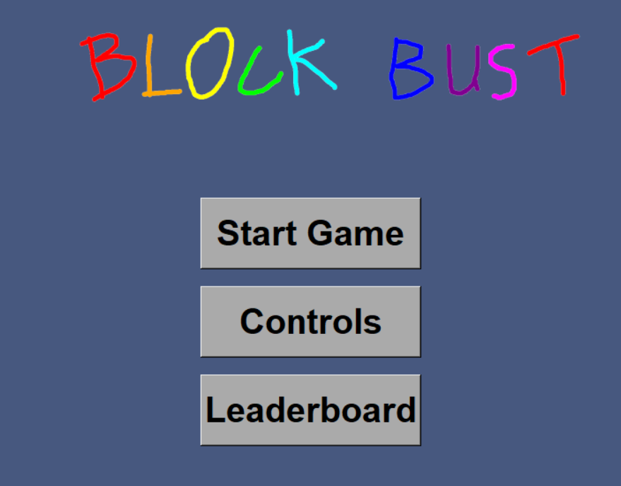
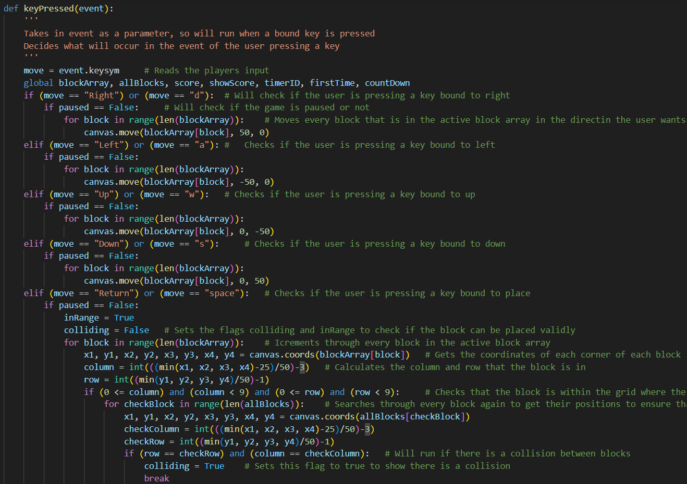
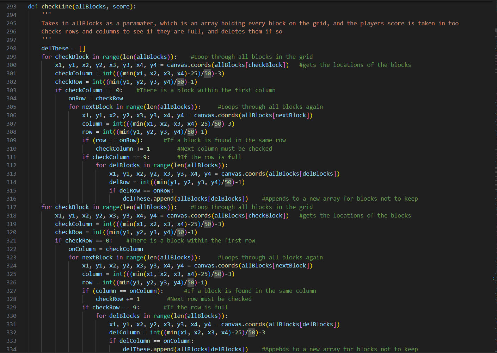
These are some samples of code I have taken from this program. The first is part of the keyPressed() function. In this function, we can see that it checks for if the user has pressed one of a few selected keys. If this does occur, and the game is not paused, then Tkinter will be used to display the block in a new position. Each block is 50px, so a grid of 50px per square can easily be used to fit the blocks in. Once the button assigned to place is pressed, it will then check that the block is within the designated game grid. If it is, then the block will be placed, checkLine() will be called, and a new block will be created.
The second code sample is from the checkLine() method, which will check to see if every square in a horizontal or vertical line has been filled. If it has, then the blocks in this line will be removed and the players score will be updated. It does this bu first looping through all blocks. If any block is at the beginning of a row or a column, then it will loop through all blocks placed to find the ammount in this line. If this number is line, then it will loop through all blocks and delete any found from this line.
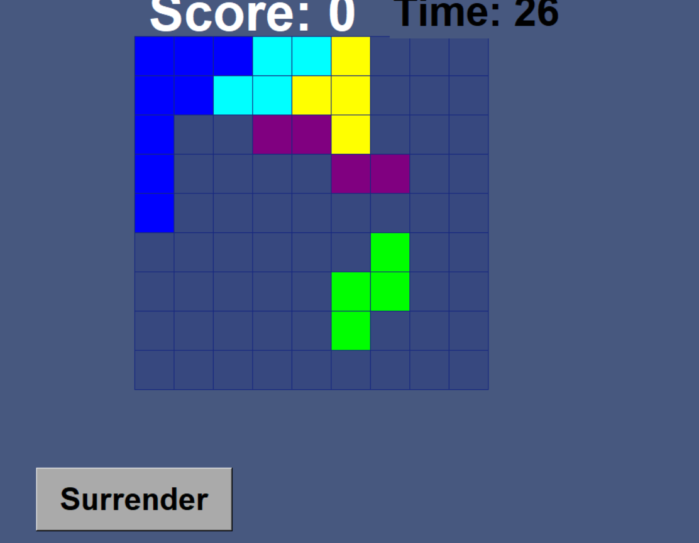
An image of the gameplay of Block Bust is shown here. You can see the gameplay grid, which is ther area in which the player can place blocks. Blocks are generated from a given set of shapes, and a random color. The player aims to make lines of blocks to increase their score. The Score is displayed at the top, along with a timer. This timer counts down, showing how long the player has left to place the block before they lose the game, making them have to act fast. When the player places a block, this timer will reset. As the players score increases, the maximum time that the timer is reset to will be lowered, making the game become more challenging as the player progresses.
The tools used in the creation of this project include:
Utilising Java, JavaFX and CSS, I created a TicTacToe program. This program can be run in either the command line, or in a game window using the JavaFX library. You can choose to play either single player against an AI that I had created, or two player against another player by taking turns. I created this program to test my Java skills, as I was learning it at the time. The code for this program is available at my GitHub.
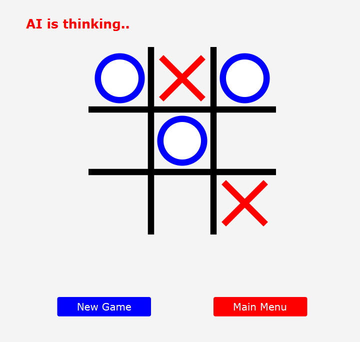
The bot that the player will compete against in the single player mode works by assigning various priorities to each square of the Tic Tac Toe grid. The highest priority will be given to a square that will lead to a win, then to a square that blocks the player from winning, and so on. These priorities are cumulative, so if one square will lead to multiple different advantages, then it's priority will be higher. The AI will then check to see if that square is empty using a helper function. If this is a valid move, then it will be made. This makes for a challenging and engaging game.
The graphics you can see in this image were created using the JavaFX library. The text however is stylised using CSS.
If there is a tie, then the board will be reset and the game will continue. After each move, the program will check for two conditions; if the game has been won, or if the game has resulted in a tie.
Two samples of the Tic Tac Toe code are displayed here. The first shows the initialisaton of the Board class. The board is a 2D array of characters, with 3 rows and 3 columns. This reflects what an actual Tic Tac Toe board would look like. We can also see the getter method for Board, and the populateBoard() method which will take a row, column, and player as input and will create an X or O there respectively.
The second code sample displays the last part of the AI logic. After assigning a priority to each square, it will then find an array of all squares with the highest priority and select a random one from them. This ensures that its algorithm will not be predictable if multiple squares have the same priority. It will do this until checkMove() method returns true, signalling that this square has not already been filled. This is an extra layer of security, as a square will not be assigned a priority if there is already an X or O on it.
When a victory has been achieved, the player will be presented with the option to return to the main menu, or to play again using the buttons at the bootom of the screen. All buttons in this program will change shades when the mouse hovers over them, creating an element of interactivity and providing visual feedback to the user.
The tools used to create this program are:
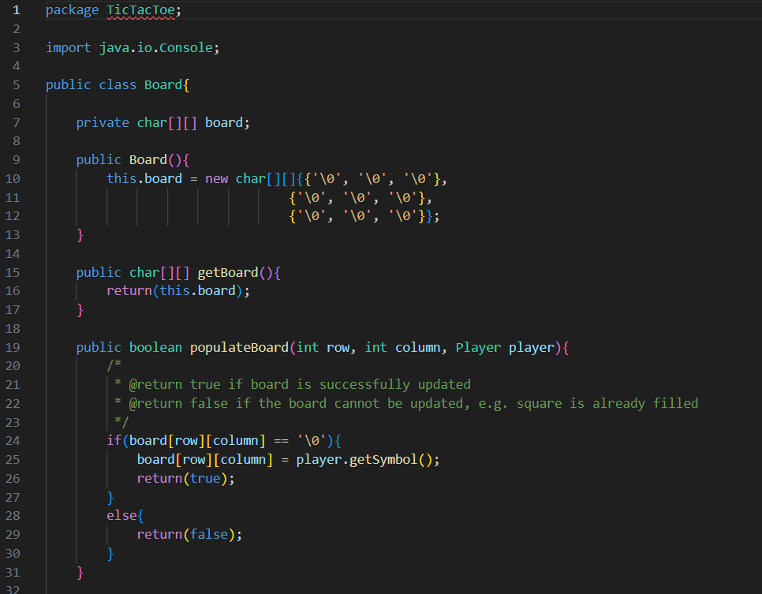
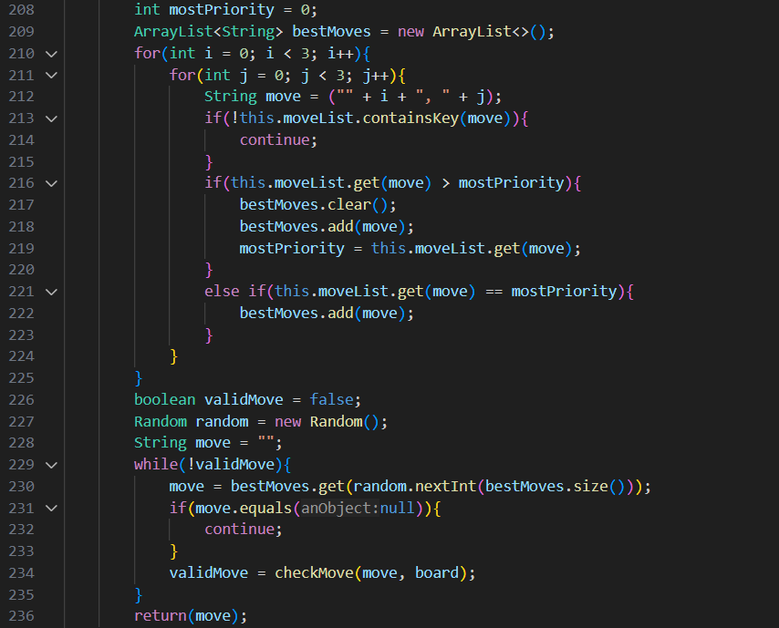